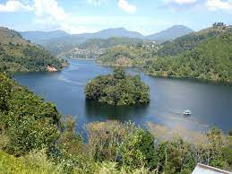
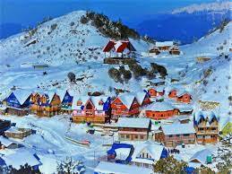
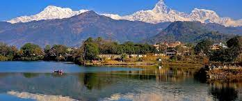
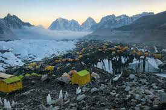

Nepal is a landlocked country in South Asia, located in the Himalayas. It is bordered by China to the north and India to the south, east, and west. Nepal is home to eight of the world's fourteen 8,000-meter peaks, including Mount Everest, the highest mountain in the world.
Kalinchwok is a Hindu temple complex located in the Dolakha district of Nepal, approximately 130 kilometers from Kathmandu. It is dedicated to the Hindu goddess Kali and is one of the most popular pilgrimage sites in Nepal.
Kulekhani is a lakeside town located in the Makawan district of Nepal, approximately 60 kilometers from Kathmandu. It is known for its beautiful scenery and laid-back atmosphere.
Pokhara is a city located in the Gandaki province of Nepal, approximately 200 kilometers from Kathmandu. It is one of the most popular tourist destinations in Nepal, known for its stunning views of the Annapurna mountain range, its Phewa Lake, and its laid-back atmosphere.
Everest Base Camp is the base camp for climbers attempting to summit Mount Everest. It is located at an altitude of 5,364 meters in the Khumbu Valley of Nepal. Everest Base Camp is a popular trekking destination for those who want to experience the Himalayas without having to climb the highest mountain in the world.
This is Mount Everest! The tallest mountain in the world... You can't visit it but you sure can climb it!
This is the Kulekhani. I have visited it and we also got a boat to go on the lake
Kanlinchowk... It was a very fun expierence to visit it is quite cold sometimes do bring your jackets!
Pokahara is the top spot for tourists that come to Nepal. There are too many places that you can visit in Pokahara itself I have been there more than 20 times at this point 
Everest Base Camp is a camp which you can find on if you climb Mount Everest It is still quite far from Mount Everest but you can get stunning views.